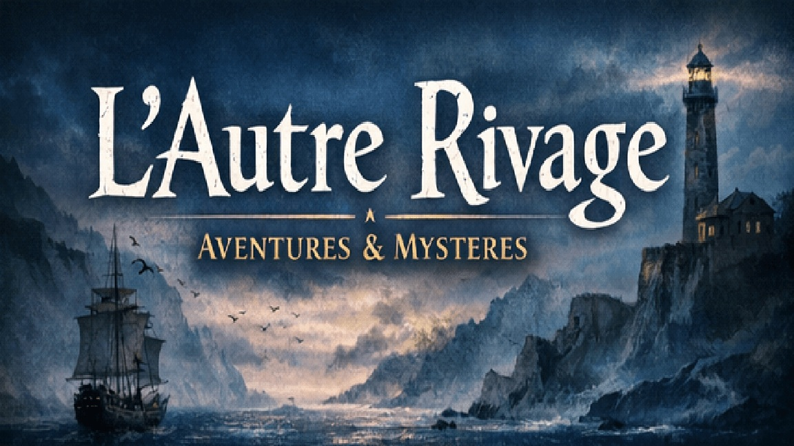
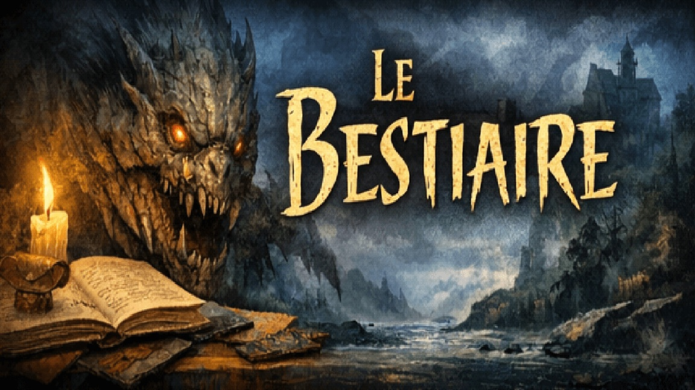
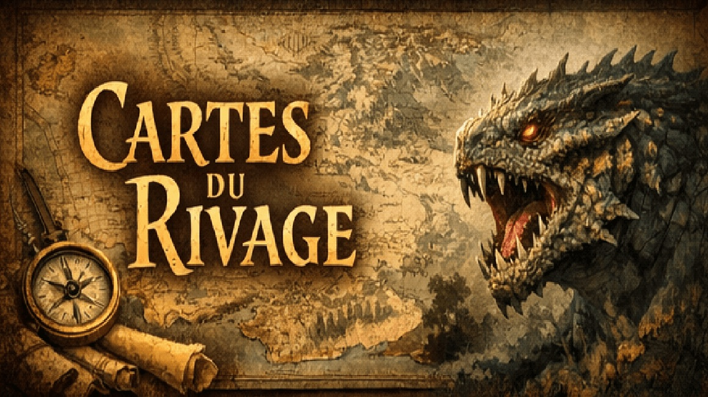
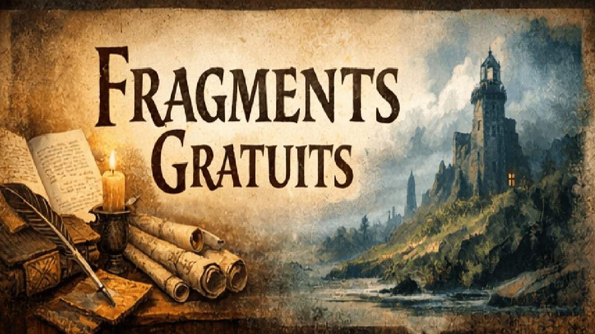

PDF gratuit
Livre d’initiation
La porte d’entrée la plus simple pour comprendre le ton, les bases et la promesse du jeu.
Le site doit être compris en trois secondes. Tu veux lire, explorer, jouer ou fouiller le lore : tout part d’ici.

Comprendre les terres, les fractures, les peuples et la mémoire instable du Rivage.
Explorer l’univers
Parcours les présences qui hantent les forêts, les brumes, les ruines et les routes perdues.
Voir le bestiaire
Falaises, marais, îles, mer des brumes et forêts : les cartes donnent une lecture claire du monde.
Ouvrir les cartesLes livres gratuits sont désormais visibles sans fouiller comme un gobelin perdu dans une cave mal rangée.
La porte d’entrée la plus simple pour comprendre le ton, les bases et la promesse du jeu.
Les créatures obscures, les menaces silencieuses et tout ce qui préfère la brume à la lumière.

Les créatures des terres, des peuples et des régions vivantes du Rivage.